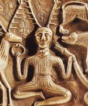

Цернунн ( "рогатий"), в міфології кельтів бог, шанований на території нинішніх Франції і Британії. Він зазвичай зображувався сидячим зі схрещеними ногами або з вартими поруч оленем і биком, одягненим в туніку без рукавів, з Торквес (подобою намиста - відзнаками у кельтів) на шиї. Його голову прикрашала пара гіллястих оленячих рогів, і саме ім'я "рогатий" говорить, що він був богом лісу і диких тварин або богом достатку. Можливо, Цернунн був владикою підземного царства, пов'язаних з циклами вмирання і відродження природи.
На знаменитому котлі з Гундеструпа Цернунн, кельтський бог, який сидить у позі лотоса, показаний в оточенні диких тварин - оленя, кабана і лева. В одній руці він тримає торквес, намисто воїна, в іншій - змію, символ влади.
Цернунн був найбільш колоритним міфологічним чином кельтів, які не піддалися римської асиміляції. Безумовно, він, як одного з кельтських образів Бога Земних Сил грав більш значну роль, ніж Єзус. Найбільш характерні риси бога: «буддійська поза» зі схрещеними ногами, оленячі роги, кільце-торквес і бараноголових змія. В силу частого зображення останньої, можна зробити висновок, що змія являє щось більше, ніж просто атрибут рогатої бога. І змія, і баран представляють аспект родючості. Крім того, в Галлії баран як сакральне тварина був пов'язаний з культом вогню і в якійсь мірі з'єднаний з культом мертвих.